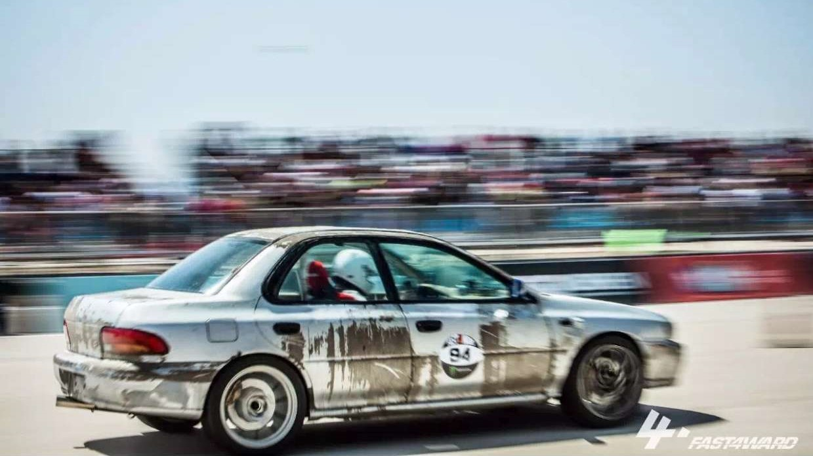
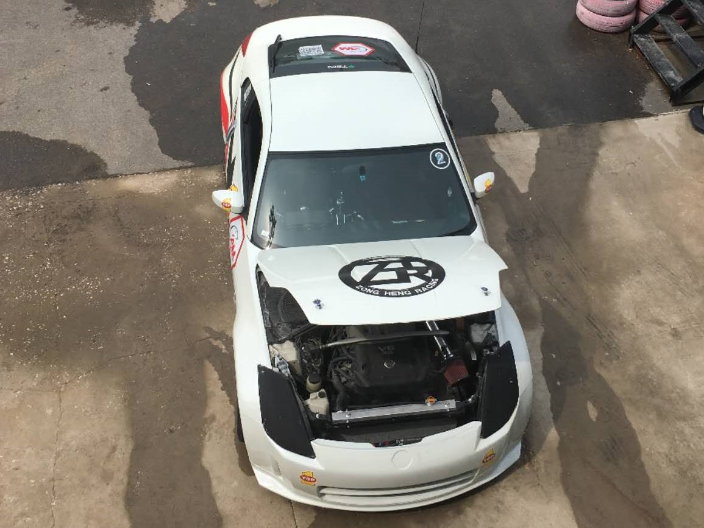
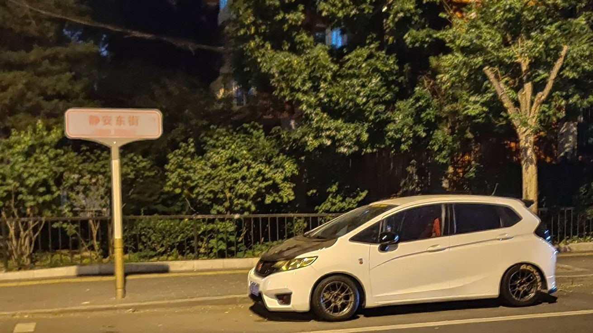

Pre-Journey
I was born in Japan and grew up in Beijing, China. The car community at Beijing wasn’t very strong, so I barely had any chances to get into the car community. But as I became a high school student, I was allowed by my parents to go to more places. So I started going to car meets and events. The are events like Fast4ward, a drag race competition, and iAcro car meets.
Then I found out about the organization that teach people how to drift, and I was fortunate enough to participate in a one day lesson about drifting. It’s my first time driving a car, the car was also a right hand drive manual car, which made it more difficult. But after one day of lessons, I was able to do donuts with the car and I was really proud of myself, also great thanks to my parents for giving me this opportunity.
The summer before I came to San Francisco for university, I went from after hanging out with my friend and I saw a cool Honda Fit GK5 at the main gate of the apartment that I lived. The driver was inside the car, so I walked to him and just started to chat about cars. He’s my first friend in the automotive community, as we became more familiar with, he took me to mountain road cruises and track events. I was amazed by how much fun a small front wheel drive car can bring to the driver, and I was attracted by Honda, and I was thinking about getting a small Honda after I came to university.
